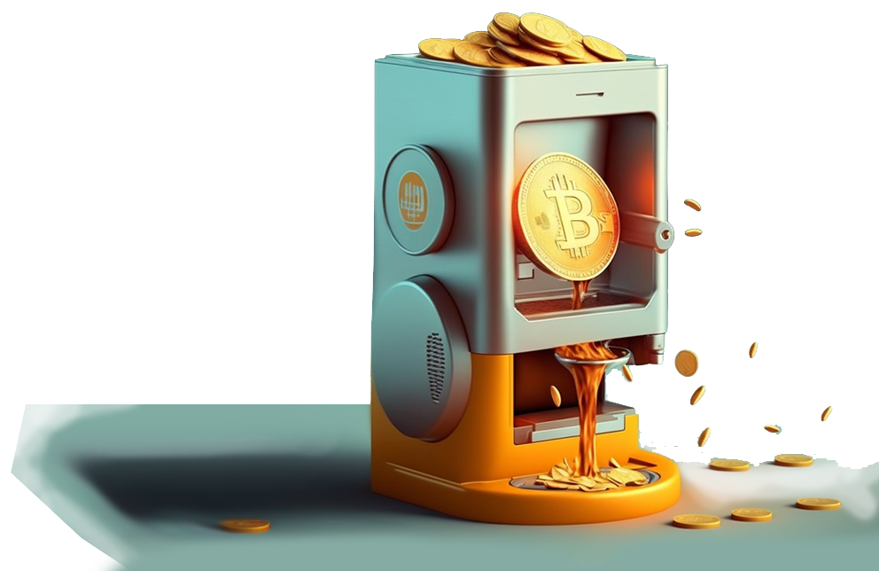
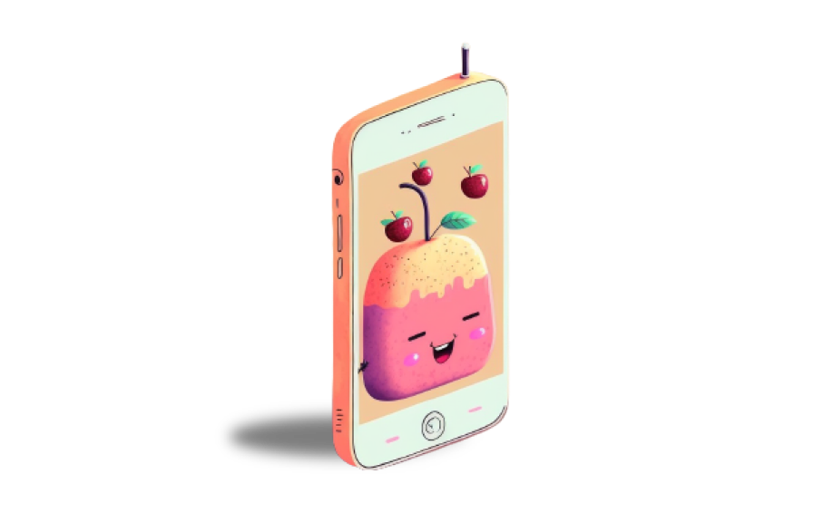
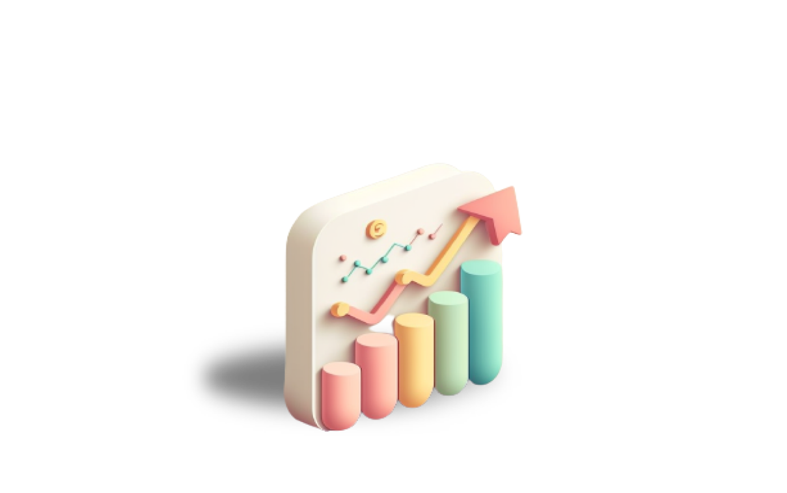
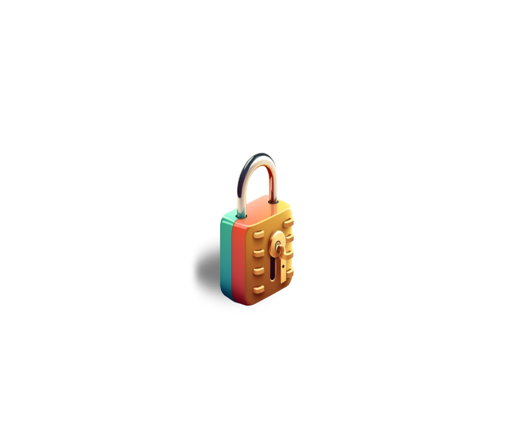

JUS — Senegal, 2023
A stablecoin savings app I designed for the African unbanked. It never launched. I am sharing it because it is, in substance, the same problem Perena is now solving, and because it is why the emerging-market savings mission is not abstract to me.

JUS brand and concept work, 2023.
What it was
In 2023, while living in Senegal, I founded JUS and led it as CEO with a small team. It was a mobile-first stablecoin savings app for the unbanked, especially women across Senegal and the wider WAEMU region.
The idea was simple on the surface and hard underneath: two-click yield on mobile money. Deposit through the mobile-money rails people already use (Wave, Orange), convert to a stablecoin, earn real DeFi yield, and withdraw straight back to mobile money.



- Protect savings from local-currency inflation. Holding a dollar stablecoin instead of a devaluing XOF was the core value.
- Give people with no bank access a way to save and grow money, not just move it.
- Built for trust and simplicity: plain-language education, localised support, street teams to onboard people face to face, and an on-chain financial history so users could begin to build credit.
Target markets across the WAEMU region:


The honest status
I took JUS to pitch-ready: demo wireframes, a deck, a business plan, a financial model, and a full go-to-market. I pitched investors and partners.
It never found traction and it never launched. No live product, no users. I am not presenting it as a success. I am presenting it as real, considered work on a problem I care about.
What it taught me (the part that matters for Perena)
The hard part was never the product or the yield. It was trust and distribution with non-crypto users. Getting a person with no banking history to put real money into something they do not yet understand is the whole game, and it is far harder than any smart contract.
That is precisely the problem Perena is now better placed to solve: a real product with real, diversified yield, a brand built for approachability, and the fiat and wallet rails finally maturing. The thing I could not get off the ground in 2023 is closer to possible now, with the pieces Perena has.
It is also why, when Anna talks about serving savers in emerging markets who have no local alternative, it is not a thesis to me. I have sat with that user.
Shared as context, not a credential. The company did not make it. The lessons did.